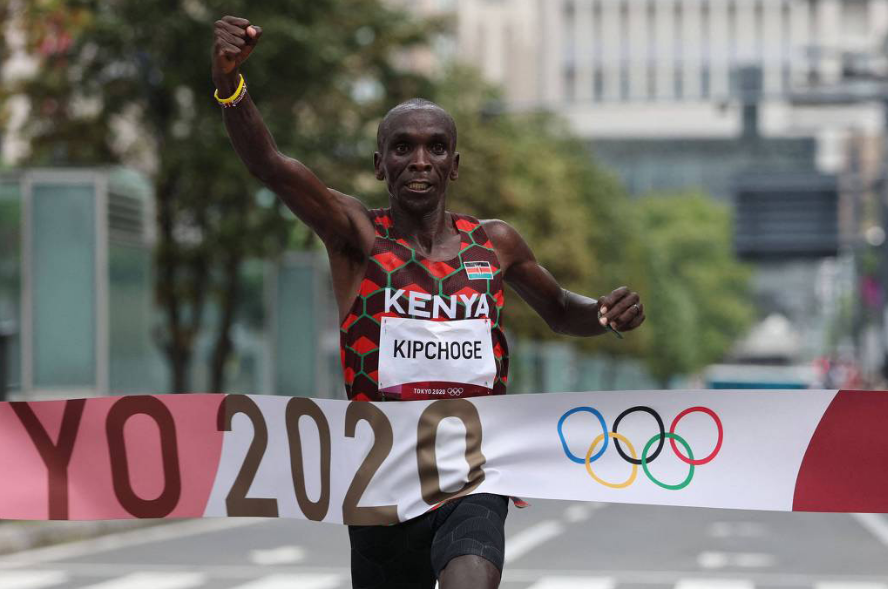
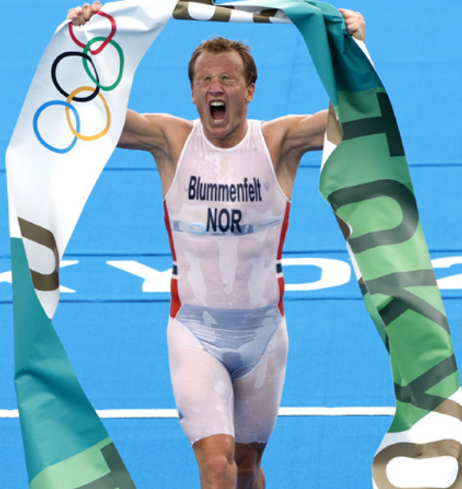
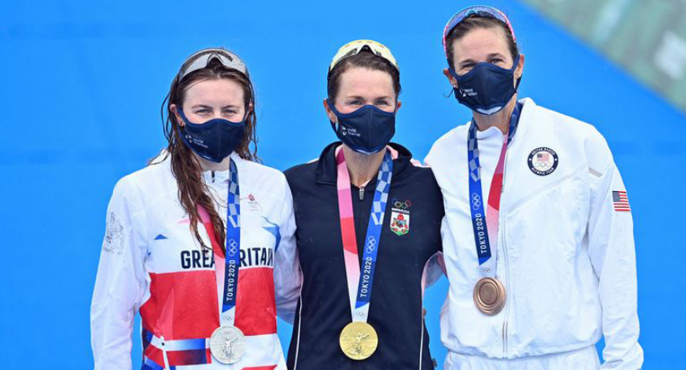
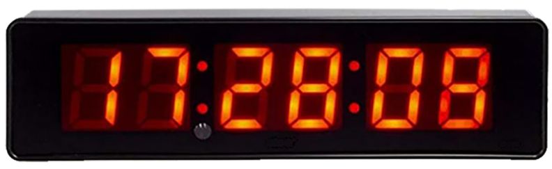
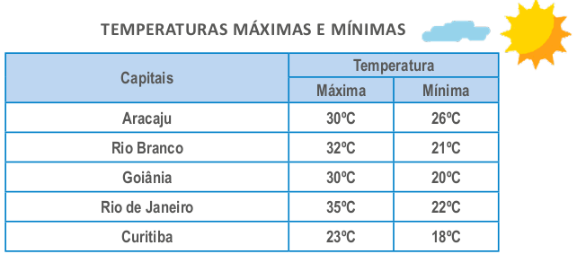
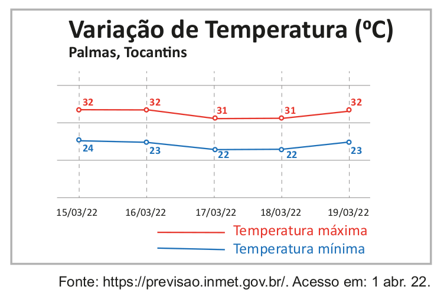
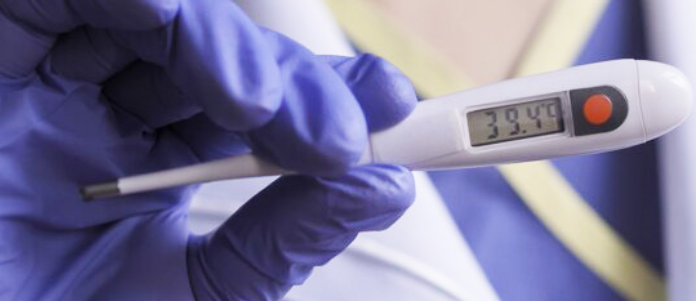
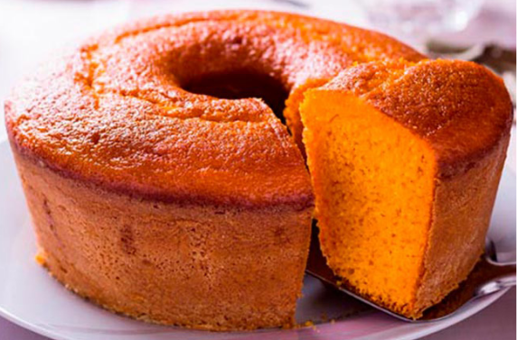

266
CAPÍTULO 4 - Medidas de tempo e temperatura
Unidades de medida de tempo
Na corrida da maratona de Tóquio 2020 em 2021, a medalha de ouro foi conquistada pelo queniano Eliud Kipchoge, que completou o percurso com o tempo de 2h8min38s.
A medalha de prata foi conquista pelo holandês Abdi Nageeye, com o tempo de 2h9min58s e a de bronze pelo belga Bashir Abdi, com o tempo de 2h10min.

1. Troque ideias com um colega e respondam: observando o tempo que cada corredor levou para completar o percurso da prova, qual a diferença aproximada entre eles? Como vocês realizaram esse cálculo?.
A unidade de medida adotada pelo Sistema Internacional de Unidades é o segundo (s). Dependendo do intervalo de tempo a ser medido também podemos usar o minuto (min) e a hora (h).
É possível realizar a conversão entre essas unidades de medida de tem- po, observe:
► 1 hora corresponde a 60 minutos;
► 1 minuto corresponde a 60 segundos;
► 1 hora corresponde a 3 600 segundos.
267
ENCONTRE SOLUÇÕES
1. Escreva em seu caderno quantos segundos correspondem a:
a) 6 min
b) 23 min
c) 1h4min
2. Transforme em horas e minutos os segundos a seguir.
a) 5 600 s
b) 8 432 s
c) 12 000 s
3. O Triatlo estreou no programa olímpico em Sidney no ano de 2000. Nesta modalidade, o atleta percorre 1 500 m nadando, 40 km pedalando e 10 km correndo. Na Olímpiada de Tóquio, o vencedor dessa modalidade foi o triatleta norueguês Kristian Blummenfelt, com o tempo de 18min4s na natação, 56min19s no ciclismo e 29min34s na corrida. Qual o tempo total aproximado que esse atleta levou para percorrer todo o percurso?

4. Nas Olímpiadas de Tóquio, no Triatlo feminino, a medalha de ouro foi conquistada por Flora Duffy, das Bermudas, com o tempo de 1h55min36s. A medalha de prata por Georgia Taylor-Brown, da Grã-Bretanha, e bronze com Katie Zaferes, dos Estados Unidos, com os tempos 1h56min50s e 1h57min3s, respectivamente. Qual a diferença entre o tempo realizado da 1.ª colocada para a 2.ª, e da 2.ª colocada para a 3.ª?

5. Observe a imagem de um cronometro indicando horas, minutos e segundos. Em seu caderno, elabore um problema e, em seguida, solicite a um colega que o resolva.

6. Quando estamos viajando pelo mundo, devemos observar o fuso horário das cidades que vamos. Observe os relógios com os horários em Brasília e em cidades de outros países.
► Brasília (Brasil) 15:23
► Shanghai (China) 02:23
► Montreal (Canadá) 14:23
► Seoul (Coreia do Sul) 03:23
a) Qual é a diferença de horas entre Brasília e Shanghai?
b) Se uma pessoa ligar às 8 horas de Brasília, que horas serão em Seoul?
268
O Brasil é um país em que a temperatura varia de acordo com a região. Nas regiões Norte e Nordeste podemos ter temperaturas elevadas durante o verão, enquanto na Região Sul, baixas temperaturas durante o inverno.
Observe na tabela abaixo as temperaturas registradas em um dia de ve- rão em algumas capitais.

1. Troque ideias com um colega e, em seus cadernos, respondam às questões a seguir.
a) Em qual capital foi registrada a temperatura mais baixa?
b) Em qual capital foi registrada a temperatura mais alta?
c) Quais foram as variações de temperaturas nas capitais citadas?
d) Em qual capital ocorreu a maior variação de temperatura?
e) A menor temperatura máxima foi registrada em qual capital?
f) Em qual capital foi registrada a maior temperatura mínima?
g) Como se chama a unidade de temperatura usada no Brasil?
h) Qual o instrumento usado para medir a temperatura?
Observem os termômetros a seguir.
Termômetro de rua. Porto Alegre, RS, 2022.
Termômetro de rua. Nova Friburgo, RJ, 2021.
2. Troque ideias com seu colega e escrevam, em seus cadernos, um texto explicando o que observaram nas temperaturas registradas nos termômetros das imagens.
269
ENCONTRE SOLUÇÕES
1. Observe, no gráfico abaixo, a variação de temperatura na capital Palmas, es- tado do Tocantins, entre os dias 15 e 19 de março de 2022.
a) Em seu caderno, produza um texto explicando as informações transmitidas por meio do gráfico.
b) A partir do gráfico, elabore uma situação-problema e troque seu caderno com um colega para que ele resolva a situação elaborada por você.
2. Faça uma pesquisa e verifique quais são as temperaturas previstas para os próximos 4 dias na cidade onde você mora. Identifique as temperaturas máximas e mínimas e registre as informações encontradas em uma tabela em seu caderno.
3. Na imagem a seguir temos um termômetro que foi usado para medir a temperatura do corpo de uma criança.
a) Qual a temperatura que o termômetro está marcando?
b) Em sua opinião, a criança está com febre?
4. Ao fazer um bolo, é comum a orientação do que fazer antes de preparar a massa, como a indicação do preaquecimento do forno. Na receita a seguir, qual a temperatura indicada para o preaquecimento do forno?
Bolo de cenoura
Ingredientes
½ xícara (chá) de óleo
3 cenouras médias raladas
4 ovos
2 xícaras (chá) de açúcar
2 e ½ xícaras (chá) de farinha de trigo
1 colher (sopa) de fermento em pó
Modo de preparo
1. Em um liquidificador, adicione a cenoura, os ovos e o óleo, depois misture.
2. Acrescente o açúcar e bata novamente por 5 minutos.
3. Em uma tigela ou na batedeira, adicione a farinha de trigo e depois misture novamente.
4. Acrescente o fermento e misture lentamente com uma colher.
5. Asse em um forno preaquecido a 180° C por aproximadamente 40 minutos.
270